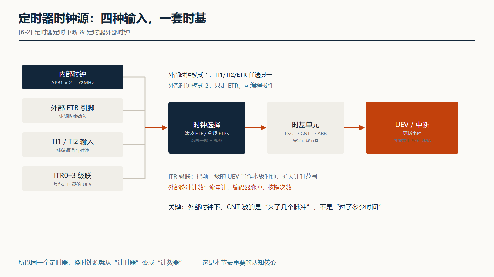

课程时长：约 38 分钟 | 深度版 | 配套结构图与看图理解
6-1 讲的是“时基怎么算”，这一节把问题往前推一层：时钟到底从哪来。内部时钟（APB1×2=72MHz）做定时中断，外部时钟（ETR/TI/ITR）做脉冲计数。
本节最重要的认知转变是：同一个定时器，换个时钟源，就从“计时器”变成了“计数器”。CNT 数的东西从“时间”变成了“事件个数”。
说出四条时钟源路径及各自适用场景
区分外部时钟模式 1 与模式 2
配置 ETR 对外部脉冲计数并读出个数
理解滤波器 ETF 与分频 ETPS 的作用

图 11 定时器时钟源的四条路径：内部时钟、ETR 引脚、TI1/TI2、ITR 级联，最终都进入同一套时基
左侧四路输入最终汇聚到“时钟选择”：内部时钟来自 APB1×2，ETR 是外部引脚，TI1/TI2 借用输入捕获通道，ITR 是别的定时器的更新事件。
右侧仍是那套时基：PSC 分频、CNT 计数、ARR 溢出产生 UEV。差别只在“谁在给 CNT 提供节拍”——内部时钟给的是固定频率，外部时钟给的是一个个脉冲。所以外部时钟下，CNT 的值就是“来了多少个脉冲”。
内部时钟 72MHz，PSC=7199 得到 10kHz，ARR=9999 得到 1Hz，即每秒一次更新中断。这是 6-1 的内容，也是本节对照的基准。
RCC_APB1PeriphClockCmd(RCC_APB1Periph_TIM3, ENABLE); TIM_TimeBaseInitTypeDef t; t.TIM_Prescaler = 7199; /* 72M / 7200 = 10kHz */ t.TIM_Period = 9999; /* 10000 个数 = 1s */ t.TIM_CounterMode = TIM_CounterMode_Up; TIM_TimeBaseInit(TIM3, &t); TIM_ClearFlag(TIM3, TIM_FLAG_Update); TIM_ITConfig(TIM3, TIM_IT_Update, ENABLE); TIM_Cmd(TIM3, ENABLE);
| 路径 | 来源 | 典型用途 | 配置函数 |
|---|---|---|---|
| 内部时钟 | APB1 × 2 = 72MHz | 定时、PWM 时基 | 默认 |
| 外部时钟 1 | TI1 / TI2 / ETR | 外部脉冲计数 | TIM_TIxExternalClockConfig |
| 外部时钟 2 | 仅 ETR | 带极性/滤波的计数 | TIM_ETRClockMode2Config |
| ITR 级联 | 其他定时器 UEV | 扩大计时范围 | TIM_ITRxExternalClockConfig |
模式 1 把“选中的输入”直接当作计数时钟，输入可以是 TI1、TI2 或 ETR；模式 2 只认 ETR，但对极性与滤波的控制更直接。
实际项目中：只用 ETR 计数时用模式 2 更简单；要用捕获通道（TI1/TI2）当时钟源，只能用模式 1。
| 对比项 | 外部时钟模式 1 | 外部时钟模式 2 |
|---|---|---|
| 可选输入 | TI1 / TI2 / ETR | 仅 ETR |
| 典型函数 | TIM_TIxExternalClockConfig | TIM_ETRClockMode2Config |
| 适用 | 借用捕获通道 | 纯外部脉冲计数 |
触发模式：外部信号启动计数
门控模式：信号为高时才计数，可测脉冲宽度
复位模式：信号边沿把 CNT 清零，可测周期
编码器模式：A/B 两相自动加减，是 6-7 的内容
/* 1. 开时钟：TIM2 挂 APB1，ETR 引脚 PA0 需 AFIO */ RCC_APB1PeriphClockCmd(RCC_APB1Periph_TIM2, ENABLE); RCC_APB2PeriphClockCmd(RCC_APB2Periph_GPIOA | RCC_APB2Periph_AFIO, ENABLE); /* 2. PA0 配成浮空输入（ETR 复用） */ GPIO_InitTypeDef g; g.GPIO_Pin = GPIO_Pin_0; g.GPIO_Mode = GPIO_Mode_IN_FLOATING; GPIO_Init(GPIOA, &g); /* 3. 外部时钟模式 2：ETR 不分频，滤波 0 */ TIM_ETRClockMode2Config(TIM2, TIM_ExtTRGPSC_OFF, TIM_ExtTRGPolarity_NonInverted, 0); /* 4. 时基：PSC=0，ARR=65535，计满溢出 */ TIM_TimeBaseInitTypeDef t; t.TIM_Prescaler = 0; t.TIM_Period = 65535; t.TIM_CounterMode = TIM_CounterMode_Up; TIM_TimeBaseInit(TIM2, &t); TIM_Cmd(TIM2, ENABLE); /* 5. 读计数：CNT 就是“来了多少个脉冲” */ uint16_t pulses = TIM_GetCounter(TIM2);
ETF 是输入滤波器：只有持续若干个采样周期的高/低电平才被认可，用来滤掉毛刺；ETPS 是外部触发预分频：每来 N 个脉冲才计 1 个。
两者都会“吃掉”脉冲。滤波太强会漏掉窄脉冲，分频则直接降低分辨率——配置前先确认输入信号的频率与占空比。
| 参数 | 作用 | 典型取值 |
|---|---|---|
| ETF | 数字滤波，滤毛刺 | 信号干净时取 0 |
| ETPS | 外部脉冲分频 | 通常 OFF |
| 极性 | 上升沿/下降沿计数 | 按信号有效沿选 |
为什么需要外部时钟：有些量本身就是“脉冲”——流量计的叶轮每转一圈给一个脉冲、电能表每度电给一个脉冲、按键按下给一个电平跳变。用内部时钟只能“估时间”，用外部时钟才能“数事件”。
为什么 ETR 要滤波：长线引入的毛刺会被当成有效脉冲，计数值虚高。ETF 用采样方式确认电平持续，能滤掉纳秒级毛刺，但也会限制最高计数频率——这是一对矛盾。
例 1：外部信号 1kHz，PSC=0、ARR=999。每 1000 个脉冲溢出一次，即每 1 秒产生一次 UEV；若把 ARR 改成 59，则每分钟溢出一次，适合做“每分钟转速”。
例 2：一分钟计数 6000 个脉冲，则频率 = 6000/60 = 100Hz；若每个脉冲代表 0.5mL，一分钟流量 = 3000mL = 3L。
例 3：ETPS 设为 2 分频后，实际计数 = 输入脉冲数 / 2，分辨率下降一半，但可测更高频率。
| 错误写法 | 后果 | 正确做法 |
|---|---|---|
| 忘开 AFIO 时钟 | ETR 映射无效，计数不动 | 补 RCC_APB2Periph_AFIO |
| ETR 引脚配成推挽输出 | 外部信号被顶住 | 配浮空/上拉输入 |
| 把外部时钟当内部时钟算时间 | 算出的“周期”毫无意义 | 外部时钟下只数个数，不换算时间 |
| 滤波档位开到最大 | 窄脉冲被滤掉，少计 | 按信号频率选最小可用档 |
外部时钟模式下 CNT 的含义变了：内部时钟时它代表“过了多少时间”，外部时钟时它代表“来了多少个事件”。所以溢出中断的含义也变了——不再是“定时到了”，而是“计满 N 个脉冲了”。
ETF 与 ETPS 的区别：ETF 是“时间维度的确认”（电平要持续多久才算数），ETPS 是“数量维度的分频”（几个脉冲算一个）。前者抗干扰，后者降频，目的完全不同。
信号发生器输入 1kHz 方波，读 CNT 看是否每秒加 1000
示波器同时看 ETR 波形与 CNT 变化，确认没有漏计
把 ETF 调大，观察高频信号是否开始丢脉冲
| 现象 | 原因 | 解决 |
|---|---|---|
| 计数不动 | AFIO 时钟或引脚模式错 | 补时钟、改浮空输入 |
| 计数虚高 | 毛刺被当成脉冲 | 开 ETF 滤波 |
| 计数值只有一半 | ETPS 分频没关 | ETPS 设 OFF |
| 溢出太快 | ARR 太小 | 按最大脉冲数设 ARR |
Q1. 内部时钟与外部时钟的本质区别？
A：前者数时间，后者数事件。
Q2. 外部时钟模式 1 和 2 的区别？
A：模式 1 可选 TI1/TI2/ETR，模式 2 只认 ETR。
Q3. ETF 是什么？
A：输入数字滤波器，滤掉窄毛刺。
Q4. ETPS 是什么？
A：外部触发预分频，每 N 个脉冲计 1 个。
Q5. ITR 级联有什么用？
A：把前一级 UEV 当本级时钟，扩大计时范围。
Q6. ETR 引脚要配成什么模式？
A：浮空或上拉输入，交给 AFIO 复用。
Q7. 外部时钟能测频率吗？
A：能，单位时间读 CNT 差值即为频率。
Q8. 为什么计数会丢？
A：滤波过强或中断处理太慢导致溢出。
1. ETR 计数时 CNT 代表什么？
答：收到的脉冲个数。
2. 模式 2 支持 TI1 吗？
答：不支持，只认 ETR。
3. ETF 调大会怎样？
答：抗扰变强，但可能漏掉窄脉冲。
4. ARR=999、1kHz 输入，多久溢出？
答：1 秒。
5. 为什么要开 AFIO 时钟？
答：ETR 引脚需要 AFIO 映射。
☐ 能画四条时钟源路径
☐ 分清模式 1/2
☐ 会配 ETR 计数
☐ 理解 ETF/ETPS 的取舍